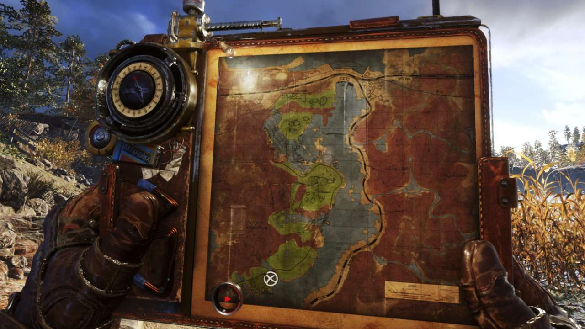
В 98 году в школе, где я учился, компьютер был только у директора. Наш учитель биологии, замечательный мужик, который по ночам подрабатывал админом в компьютерном клубе через дорогу, был единственным человеком, который шарил как этот ящик вообще работал. Я там тоже периодически зависал, поэтому в какой-то момент получил доступ к директорскому компу, под видом чистки и настройки. Все попытки заинтересовать меня программированием заканчивались включением SimCity, Caesar или Settlers и парой часов упорных тренировок в мобами. Позже, уже закончив универ, я работал в различных конторах, писал код для проектов не связанных с игростроем, но постоянно мечтал о создании игр. Пробовал заниматься маленькими играми для себя, да только в 2006 году бесплатные движки, такие как Unity и Unreal, ещё не существовали. В итоге получалось в основном писать свои движки с нуля и делать разные демки, которые благополучно забыты.
Свою карьеру в игровой индустрии мне довелось начать в компании EA в качестве программиста игрового движка, того самого Unity, но заниматься приходилось в основном низкоуровневыми оптимизациями. Так я быстро понял, что мне нравится игровой дизайн больше, чем программирование (мне по-прежнему нравятся оба направления, поэтому в какой-то момент я и перешел в AI). И хотя программистам особо не доверяли ни создание уровней ни дизайн игр, зато в рабочее время можно было спокойно изучать как функционирует и то и другое, да еще и денег за это платили. Причем изучать не только со стороны редактора, но и изнутри. Стать профессиональным игровым дизайнером у меня не вышло, но разбирать как этот самый дизайн в играх был сделан нравится и сейчас.
Над открытыми мирами не довелось работать, ну кроме, разве что, Cuisine Royale, которая, как бы, не совсем честный открытый мир, но задачи анализа технических решений в других играх и движках, чтение соответствующих лекций и статей помогают понимать какие решения были приняты дизайнерами при разработке, и главное зачем это было сделано. При погружении в новую игру, эти решения еще не так очевидны, но когда набегаешь под сотню часов в Witcher 3 или Zelda, эти паттерны становятся видны и легко ловятся взглядом. Хочу заметить, что ни та ни другая игра не ставят исследование в качестве основной цели. Квесты в Witcher рассказывают уникальные истории, а Зельда, как бы это не показалось странным, акцентируется на боевке и системе крафта. И что еще заметно, в этих играх не обязательно сильно исследовать окружающий мир. Дизайн уровней и компоновка golden path построены так, что игры ведут игрока за ручку, и он все равно оказывается возле важных областей или сюжетных квестов. А когда появилась возможность покопаться в движке и уровнях Metro: Exodus, то конечнo, с интересом начал разбираться с доступными материалами.
Опять будет много текста и картинок
Landmarks (Ориентиры)
Witcher 3 с его реалистичным открытым миром, ландшафтом, лесом, лагерями разбойников, которые в массе своей однотипные и скорее затрудняют ориентирование, и множеством ориентиров, заставляет часто лазить в карту, чтобы понять куда дальше идти. По сравнению с Ведьмаком уровни Zelda кажутся какими-то пустынными, и вроде бы легко заблудиться (особенно в пустыне), но карту приходилось открывать намного реже. Это достигается расположением объектов на уровне, специальных ориентиров и точек интереса, которые можно увидеть с расстояния. Где бы вы не оказались, у вас будет как минимум один ориентир и пара точек интереса, а по пути к ним вы несколько раз наткнетесь на мобов, даже если их там не было (правило "пяти минут"). Вы когда-нибудь задумывались, почему персонажи указывают на что-то вдали? Обычно это еще сопровождается комментариями или вообще отдельной катсценой с уникальными анимациями, хотя они будут увидены всего лишь раз за всю игру. Это потому, что лендмарки - это отличный способ и ориентировать игрока в мире, и подать или продвинуть сюжет, и закрепить какой-то финальный момент, и завязать несюжетные квесты или активности.
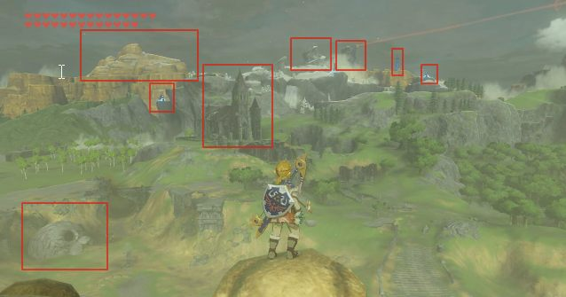
Знаете как еще называют такие ориентиры? (Weenies) "Сосиска" - этот термин придумал Уолт Дисней, он заметил, что голова его собаки всегда следит за рукой, когда он держит хот-дог. Замок Золушки в центре Диснейленда является основной "сосиской". Две других - это гора Маттерхорн и Гора Великан. Он хотел, чтобы гости всегда могли знать, где они находятся в парке, просто посмотрев на "сосиски".
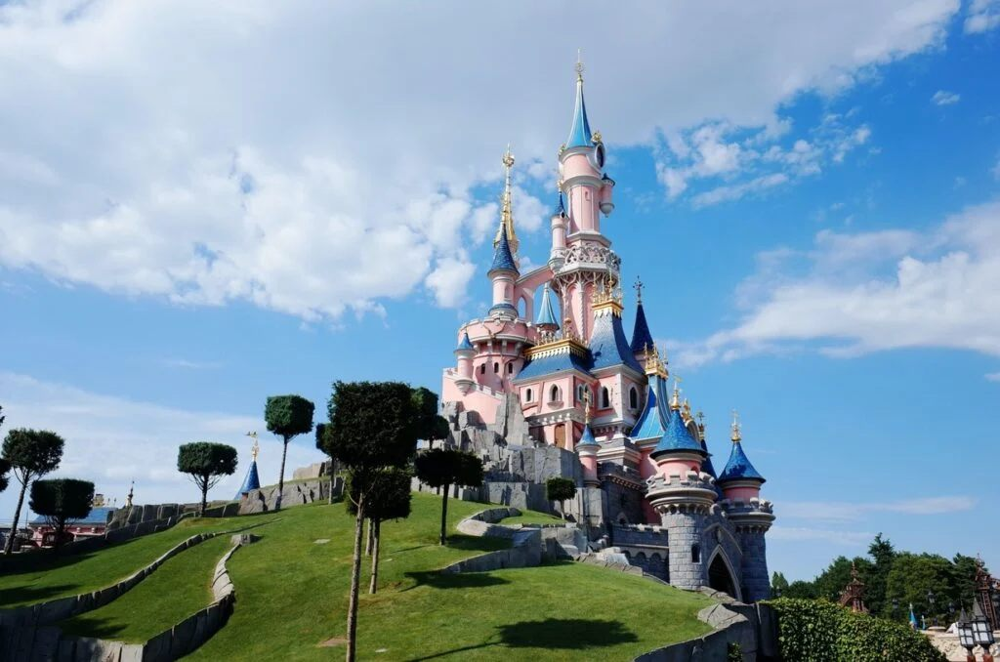
Это правило используется и в M:E, из любой точки уровня вы увидите как минимум один высотный ориентир, который цепляет взгляд. Особенно интересно становится играть, если отключить средства навигации в игре. Попробуйте, что Ведьмак, что Зельда, что Метро становятся совсем другими играми, когда нет возможности подсматривать на карту.
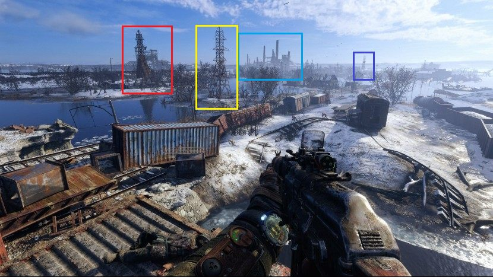
Golden path (Сюжет)
Мне не нравится идти просто по сюжету. Сюжет, разложенный на уровне занимает не больше трети всего контента, а то и меньше (это довольно субъективные наблюдения, тут я не претендую на исследования). Наверное поэтому я так и не проходил дальше половины в Morrowind, хотя начинал играть раза четыре, упрешься куда-то в горы, и вот уже пять утра на часах. Но некоторым нравится просто идти за желтой точкой на компасе, карте или чем-то ещё, особенно если в бэклоге лежит еще с десяток игр, которые тоже хочется пройти. Это сильно зависит от типа игрока или вообще от текущего настроения. Мне больше по душе, когда полностью погружаешься в игру, исследуешь разные уголки, читаешь разложенные на уровне записки и находишь предметы, открываешь интересные детали. Лучшее, что дизайнеры могут сделать - это создать интересный мир, который естественным образом ведет тебя к таким местам, показывает знаками мир тем, кто отключил маркер сюжетного квеста или вообще весь UI. Знаете, что забавно - такие знаки обычно остаются с самых ранних этапов разработки игры, когда у дизайнера еще не было финальных текстур и объектов, и вместо них стояли плейсхолдеры, чтобы ускорить процесс тестирования и итераций. Потом они обрастают лором, их стараются вписать в мир игры, и вот парящий текст в воздухе становится табличкой или указателем.
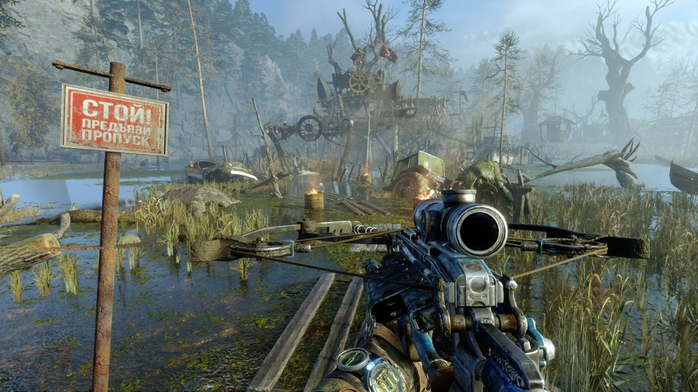
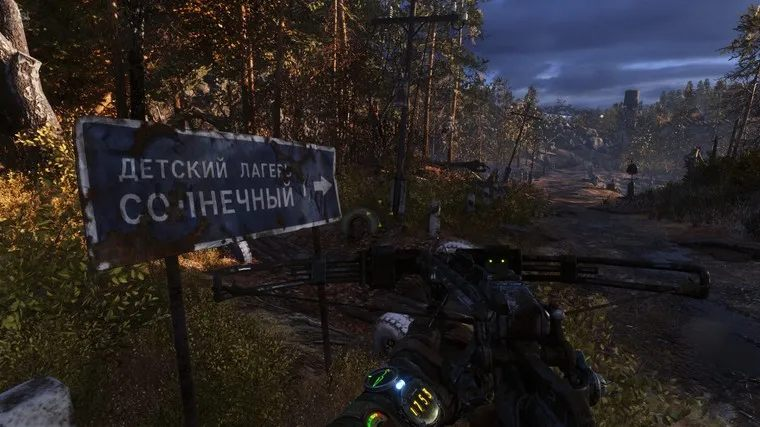
В контексте golden path, возвращаясь к лендмаркам, надо отметить, что просто поставить огромную башню вдали на уровне будет неинтересно, её вид быстро приедается. Поэтому дизайнеры используют архитектурный термин, называемый "hide&seek/прятки", когда ориентир периодически скрывают из виду, а затем снова показывют но уже с другого угла по мере продвижения по уровню, принцип не новый им пользовались еще римляне, когда строили свои храмы.
Breadcrumbs (Подсказки)
Выше были скриншоты явных указателей, куда игрок должен двигаться для развития сюжета, но это неинтересно, нарушает мир игры и очень быстро надоедает, поэтому явные указатели используют редко или в каких-то особенных местах, вроде мирных локаций, входа и выхода с уровня, мест явной смены биома. Гораздо интересней, когда дизайнер умеет работать со светом и тенью, интерактивными элементами: ящиками, дневниками, коллекционными предметами. В M:E почти везде в indoor локациях используют принцип "иди туда где светлее", начиная от размещения ламп на стенах, и заканчивая светящимися грибами. Да даже расстановка врагов на уровне может быть выполнена так, чтобы провести игрока к следующему элементу сюжета. Сколько раз светящиеся грибы выводили вас к чекпоинту?
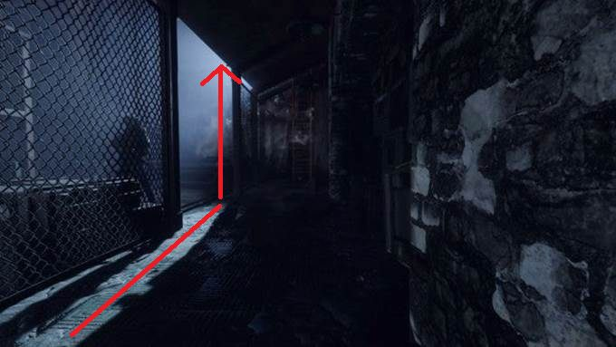
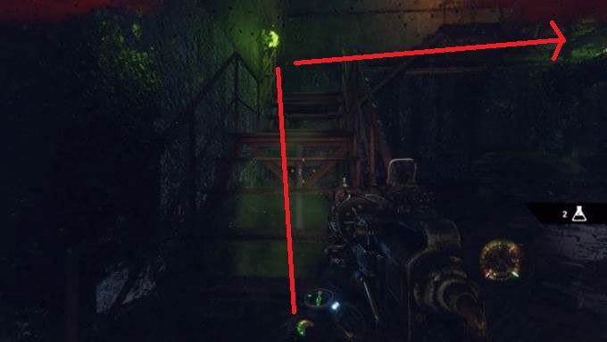
В идеале, конечно, уровень должен быть сформирован таким образом, чтобы естественно направлять игрока по сюжету, и грибы тут, равно как и желтые лестницы, скорее "костыль", когда не нашли других визуальных решений. Но на ранних этапах сборки уровня такие хлебные крошки, используются как опора для построение более сложных механик сюжета. Выделение цветом отдельных элементов игры тоже является одним из вариантов подсказок.
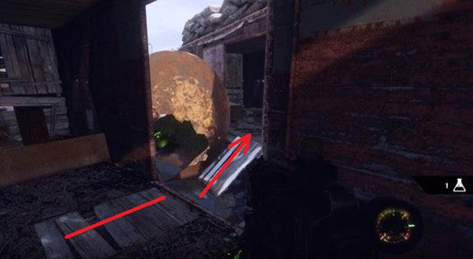
Если продолжить идею с подсказками, то их можно разделить на положительные и отрицательные. Так например можно научить игрока, что синие двери не открываются, и всегда следовать этому правилу, чтобы не ломать логику. Но это также дает возможность для разных загадок и сюжетных поворотов, когда кроме синей двери выбора не останется, главное чтобы это было оправдано, в противном случае это будет ломать атмосферу. Отрицательные подсказки дают возможность делать понятные ограничения на уровне, куда игрок не может попасть, вроде ядовитых мест, горящих предметов, зон радиации и т.д.
Walls (Стены)
Я думаю, что в большинстве современных игр дизайнеры немного обленились и часто используют невидимые стены, но могу ошибаться. К этой мысли меня подвели попытки поисследовать уровни не по сюжету, что довольно часто приводит к обнаружению таких ограничений, что конечно же ломает атмосферу. Да, я понимаю, что это игра, но надеюсь, что в современных играх невидимых стен будет поменьше. Для справедливости хочу сказать, что старые игры, Quake или Unreal, не имели такой проблемы, потому что они были более замкнуты, с коридорами и комнатами, которые почти всегда имели видимые ограничения со всех сторон, т.е. стены были физические и видимые, и это не вызывало раздражения. Даже открытые пространства Unreal имели естественные ограничения в виде обрывов или гор, куда я физически не мог попасть. Но когда я не могу пройти через полуразрушенную дверь, хотя перед этим сломал стену и открыл точно такую же по сюжету, это конечно же вызывает недоумение. И это при том, что многие современные игры представляют собой открытые для исследования миры, но дизайнеры поленились вписать ограничения в игровой процесс. Вот в этом месте я не могу запрыгнуть на ящики, хотя чуть в стороне спокойно это делал.
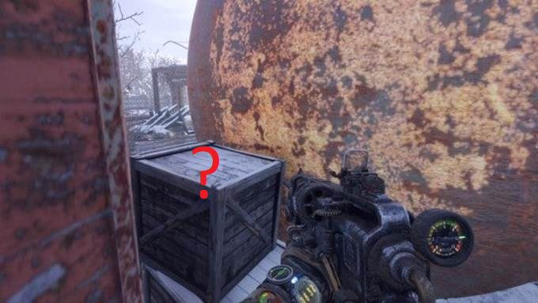
Ключевое здесь - вписать, объяснить понятно, почему игрок не может пойти куда-то. Поставить машину, овраг, ядовитую лужу, даже забор из колючей проволоки на пути! Что угодно, что соответствует миру игры. Забор из колючей проволоки или дверь из железных прутьев отлично подходит, если надо показать место куда игрок должен пройти. Как минимум через него все видно, и вот вместо тупика у вас появляются элементы лабирита, загадка, которую необходимо решить.
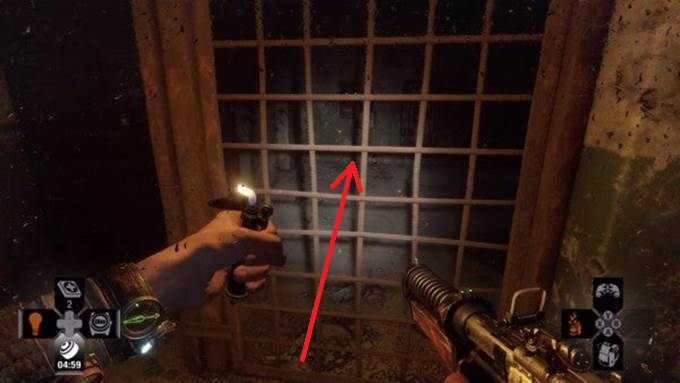
Ещё можно ограничить игроков в исследовании определенных областей с помощью дверей/ворот, которые открываются после решения пазла. Шутеры отлично научились вписывать простые загадки, типа дойди до точки B, убив всех по пути, нажми там кнопку, и вернись обратно и убей всех за дверью.
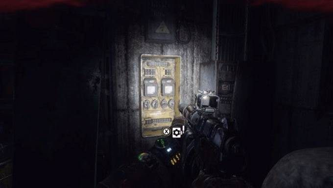
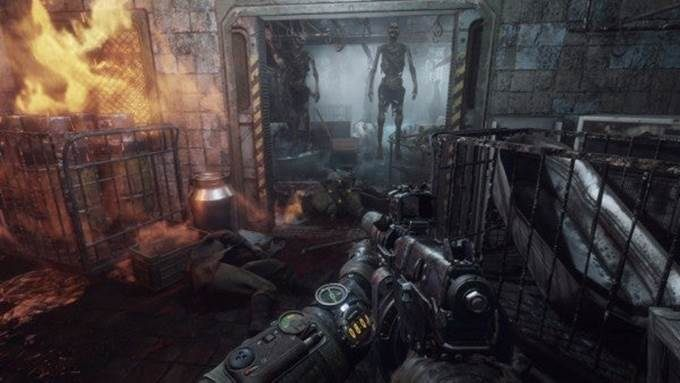
Affordance (Доступность)
Из естественных ограничителей уровня, вроде стен и обрывов получаются прекрасные замкнутые пространства, которые могут быть разбиты на зоны доступности, с помощью дверей, лестниц, пролазов и мест, которые сильно меняют вертикальную позицию игрока. Замкнутые пространства хороши тем, что позволяют рассказать и показать игроку небольшую запоминающуюся историю, представить новых персонажей, дать возможность сохраниться и получше запомнить впечатления от последних минут игры. При этом дизайнеры учитывают и внешний вид этих элементов, их делают и располагают на уровне так, чтобы их внешний вид соответствовал выполняемой функции. Если это лестница, по ней должна быть возможность залезть, дыра - пролезть, если дверь - отпереть, шкаф - открыть и т.д.
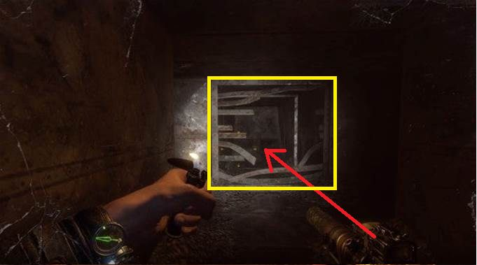
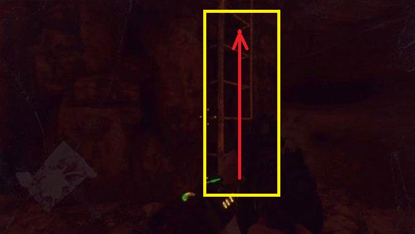
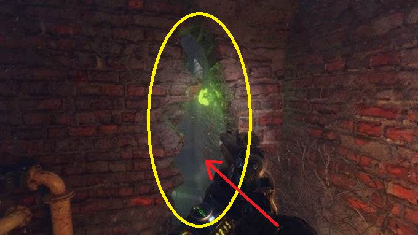
Поэтому, когда одна дверь открывается, а стоящая рядом нет, это вызывает раздражение и непонимание. Affordance (Доступность) является одним из самых используемых методов подачи сюжета и наверное самым простым.
Visual shape (Форма)
Развивая дальше идею с доступностью можно прийти к тому, что не только активные объекты имеют явно различимые признаки, но сама форма может быть признаком, например для укрытий (прямоугольные объекты на уровня пояса), который игрок научится узнавать еще в обучении. Несколько раз присев за такими объектами и поняв, что такая форма обеспечивают безопасность во время боя он и дальше будет переносить это знание на протяжении всей игры. Это связано с особенностями человеческого восприятия форм, круглые объекты воспринимаются мягкими или хрупкими, а квадратные - наоборот, твердыми и надежными. Объекты треугольной формы человек определяет как опасные.
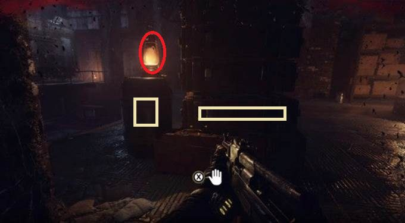
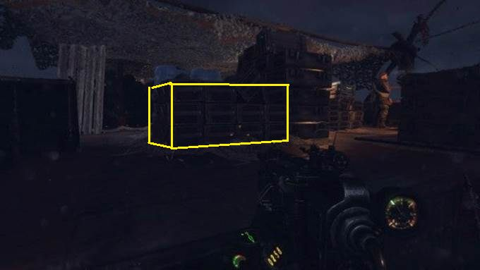
Помимо формы, как и в случае с подсказками, можно пользоваться цветом. Тогда назначение предметов будет определяться без подсказок, как это сделано например для электрических ящиков (желтые) и канистр (красные). Вообще использование контрастных цветов, чтобы привлечь взгляд к тому, куда нужно идти, широко используется в играх. В M:E используются яркие жёлтые ящики и лестницы если с ними можно взаимодействовать и объекты красного цвета, если им нужна какая-то часть для активации. Это подсказывает игроку, что от него ждут для решения пазла. И большинство людей не будут задавать вопрос что делать дальше, один раз уже решив подобную загадку.
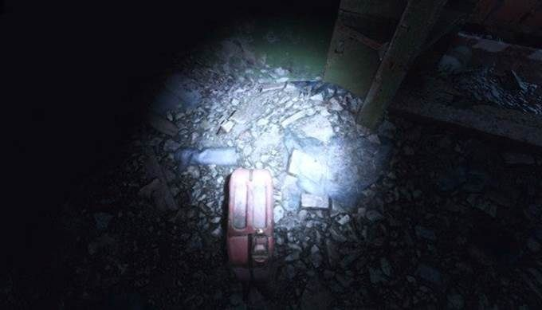
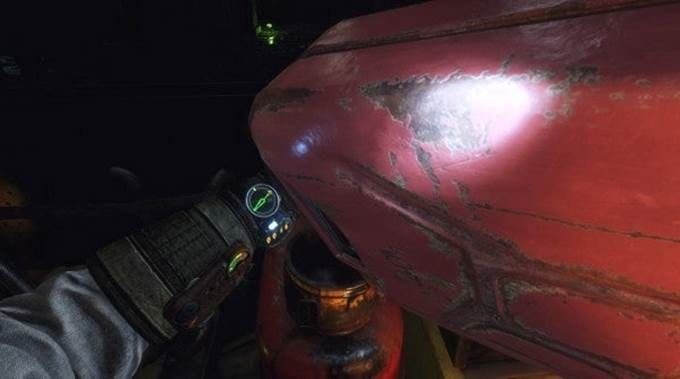
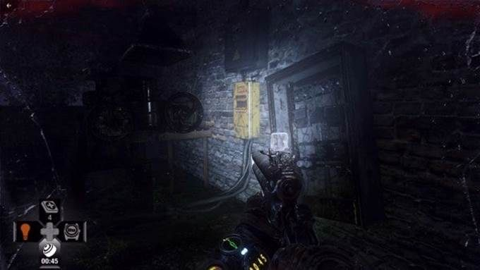
Кстати, если не заметили - цвет подсветки динамо тоже желтый. Игра использует разные комбинации: контрастный цвет, мигающий свет, светящиеся грибы, движущаяся вода, дополнительная подсветка объектов и т.д.. Всё это привлекает внимание игрока к нужному направлению.
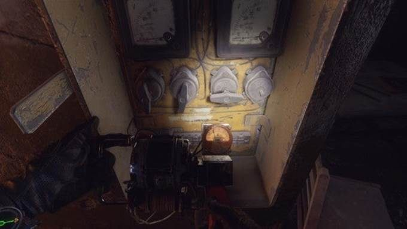
Device lock
Еще одним естественным ограничением являются улучшения или специальные предметы, игрок свободен изучать мир, но не может продвинуться по сюжету или в другую локацию, пока не получит нужный предмет. Дизайнеры широко применяют этот паттерн, чтобы ограничить доступ к локациям в определенное время, а если еще предмет использует расходники, то это сильно расширяет возможности по управлению временем игрока. А еще это позволяет улучшить нелинейность (мы ведь все любим нелинейные игры), или представить игру нелинейной. А если дизайнер добавил возможность исследовать, пусть и с ограничениями, это локации без нужного предмета, то ему можно ставить твердую пятерку. В M:E на Каспие таким device lock, становится машина, никто не запрещает обойти весь уровень пешочком, но сюжетные разговоры и продвижения по сюжету проходят именно через "буханку".
А на Valley - арбалет, вы конечно можете попробовать пройти без него, дизайнеры оставили такую возможность, но часть загадок без него решить не получится.
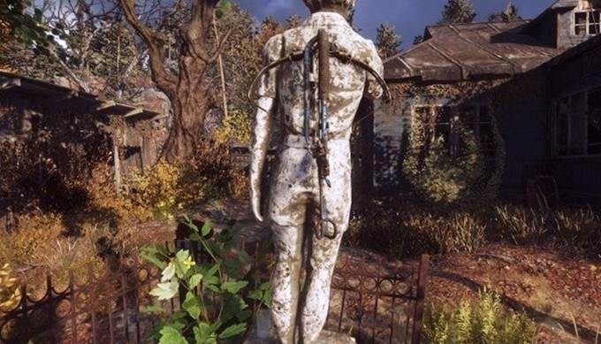
Еще одним видом Device Lock являются места крафта предметов, если есть возможность получить новые предметы и умения. Это не совсем честный прием по отношению к игрокам, потому что сбивает темп игры, зато позволяет разделить уровень на локации и логические зоны. Обычно заход в такие места отключает глобальное время в игре, запускает респавн NPC, переключает сюжетные состояния и квесты.
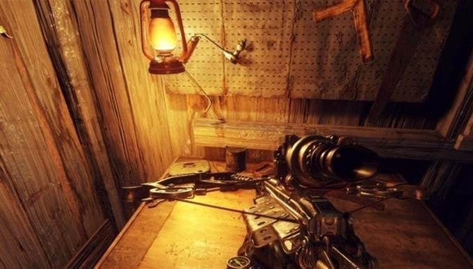
Openings Attract (Точки исследования)
Пещеры, двери, подвалы и тому подобное. Все они, кажется, притягивают людей к себе, мы конечно не кошки, но исследовать окружение любим не меньше. Такие пространства также обладают аурой таинственности, и люди хотят узнать, что находится внутри. Это притяжение происходит и в реальном мире, например городским диггерам только дай волю полазить в подземельях и метро. Отчасти это еще обусловлено тем, что на открытых пространствах размещают боевку, а комнатам оставляют функцию сейвзоны, и они психологически ощущаются как безопасные.
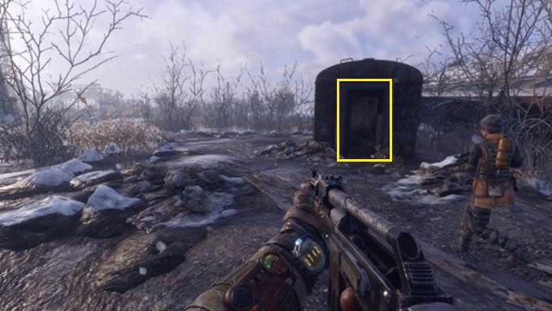
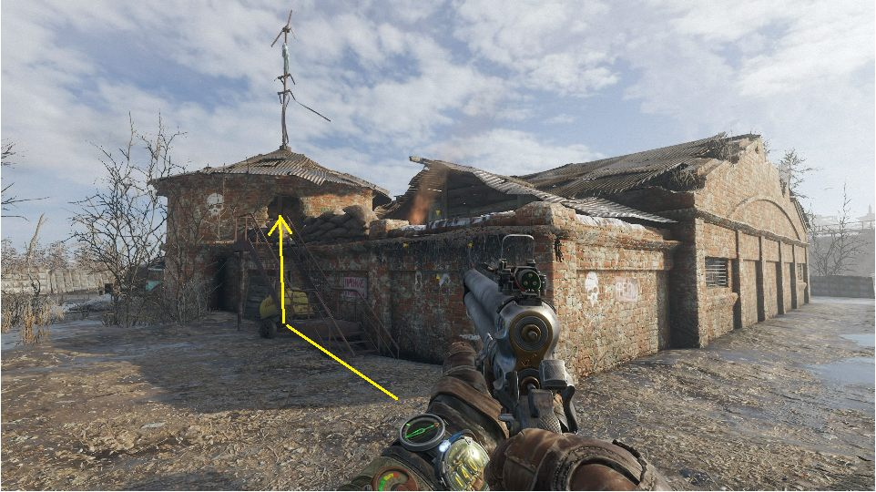
Двери и арки также притягивают, даже если за аркой не крыши. Ребята с Ubisoft на GDC, рассказывали про занятный эксперимент в Far Cry 3, когда по уровню были просто расставлены арки и косяки дверей, группа тестировщиков, которых не предупредили об этом в два раза чаще проходила под арками и косяками, чем та, которой сказали что это тестовые объекты. Еще один момент, что после осмотра интересного предмета, человек почти всегда поднимает взгляд выше, дизайнеры игр об этом знают, и будут размещать точки интереса над контрастными объектами. Вот так знание психологии помогает при создании интересных и предсказуемых мест на уровне. Правильное применение этих знаний дает дизайнеру возможность привлечь игрока к точкам интереса не поставив ни одного знака, а просто задав нужную геометрию здания или объекта.
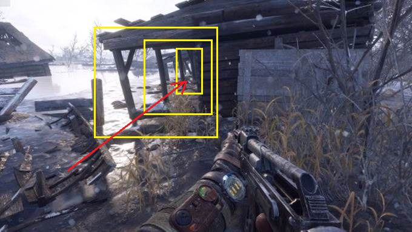
Еще одним моментом при создании точек исследования важно выделить момент смены пространства, перехода из outdoor в indoor. Для этого обычно используют разные цвета для внутренних и внешних стен. Снаружи цвет будет более холодным и теплый желтый цвет внутри, это помогает игроку понять, что игровое окружение изменилось. Если они одного и того же цвета, такого ощущения не будет. Например как на картинке ниже, здание построено из кирпичей одного и тоже цвета, но внутри они более "теплого цвета", а снаружи более серые, холодные.
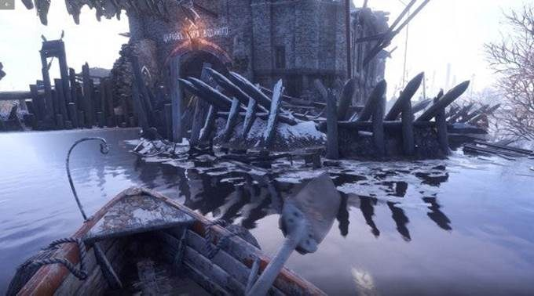
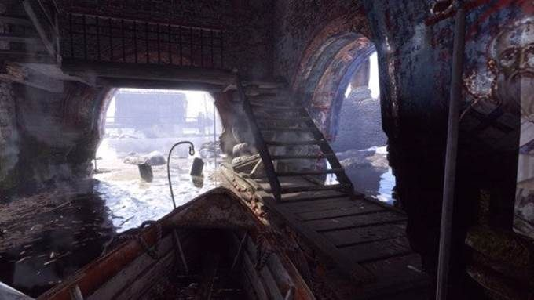
Gates & Valves (Ворота и ручки)
Ворота, двери, и разного рода пазлы, которые рассчитаны на их открытие, это один из самых дешевых способов поставить сюжет на паузу, пока не будут выполнены определенные условия: убить всех врагов, переместить обломки с дороги, включить электричество и т.д. А также это дает дизайнеру возможность закрыть дверь за игроком, чтобы он не мог вернуться обратно и выгрузить комнату, туннель, станцию, да хоть половину уровня и не заботиться как себя будут вести NPC на пройденной локации, а они вполне могут начать воевать между друг-другом, так что когда вы все таки туда вернетесь, там будут одни трупики.
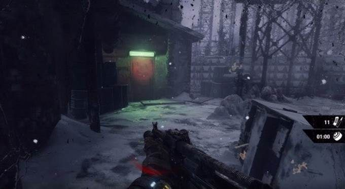
Зайдя в эту дверь, весь остальной уровень будет выгружен, что даст возможность внутри использовать в два раза больше NPC в бою и модель паровоза с большой детализацией. И хотя вам этого не показывают, но вы все равно понимаете, что пройдена определенная веха сюжета, и меньше нужно держать в уме и больше сосредоточиться на текущей задаче.
Сначала это может показаться полезным только для линейных игр, но игры с открытым миром тоже активно используют этот подход, например выгружая весь или большую часть остального уровня, пока вы проходите пещеру или другое закрытое пространство. Этот подход хорошо прослеживается, когда Артем идет спасать Анну из бункера, выйти в открытый мир не получится, пока локация с бункером не будет пройдена, весь остальной уровень в этот момент максимально выгружен, за счет чего в самом бункере стало возможным разместить более детализированные объекты и окружение.
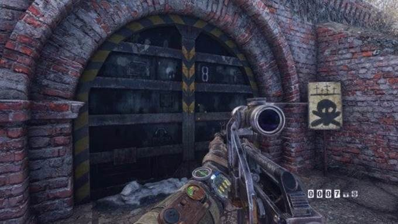
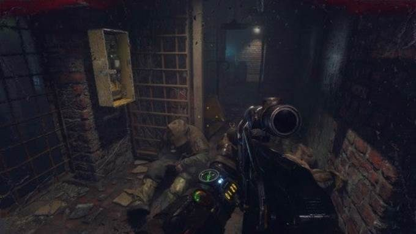
Leading Lines (Направляющие)
Такие линии пришли из живописи - это техника композиции, при которой линии на картине, привлекают взгляд к определенному месту на ней. Так и дизайнеры, используя элементы окружения рисуют стрелки, которые выглядят естественно, но привлекают внимание и указывают направление для дальнейшего прохождения. В играх это часто дороги, трубы, кабели и множество других объектов, которые игрок воспринимает как естественные, но они специально расположены и настроены таким образом. Это может казаться искажением из-за перспективы, но и вагоны слева и поезд справа специально немного развернуты в сторону пути, чтобы образовывать стрелку. Это первое, что видит игрок когда спускается с Авроры.
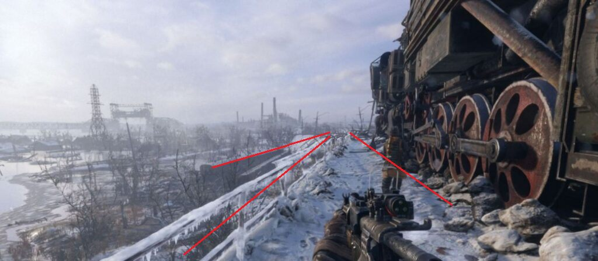
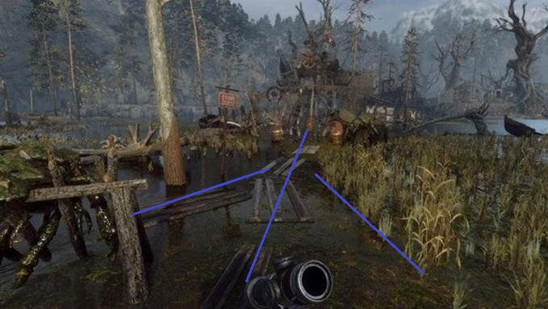
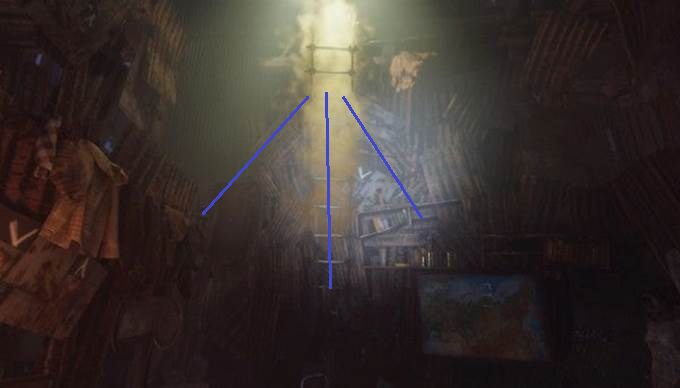
Любые элементы окружения могут быть скомбинированы так, чтобы быть подсказками, даже трубы и кабели. Заметьте, что утолщение на трубах находится только со стороны правильного выхода, вы можете и не отметить это явно, но наш мозг отмечает такие паттерны размещения, и если их используют в правильных местах, то вы и сами не замечаете как идете в нужную дизайнеру сторону. Если же их размещать бессистемно, то конечно никакого эффекта не будет. Это как тренировать нейросеть на отравленных сетах данных, результат получаем только тогда, когда тренировочный сет тоже составлен правильно.
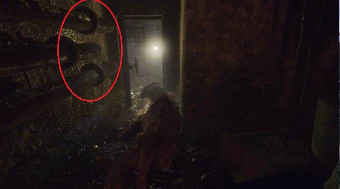
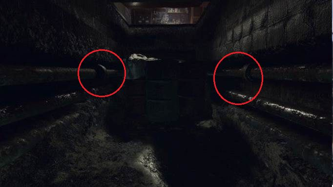
Начинающим левел дизайнерам обычно показывают эту картинку, которая объясняет принцип Leading Lines, что называется на пальцах. Продолжив эти линии в нужном направлении, можно привлечь внимание игрока вправо и увеличить вероятность, что он пойдет туда. Трубы на стенах и центральная линия задают основное направление взгляда вдоль коридора, но трубы слева заканчиваются, в то время как трубы справа поворачивают за угол, направляя взгляд. Дополнительно, контрастная линия (в нашем случае желтый провод) акцентирует внимание на повороте.
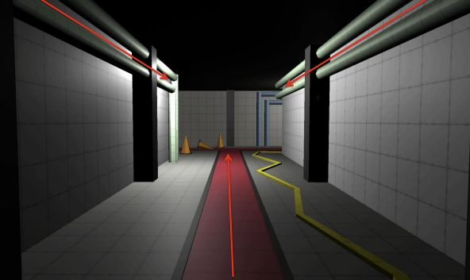
Pinching (Коридорность)
Суть этого метода заключается в том, чтобы направить игрока к определенному месту на уровне средствами окружения. Обычно это достигается путем блокирования доступа к свободному перемещению по локации через расставленные в определенном порядке объекты, чтобы игрок двигался только в одном направлении. Люди не любят, когда их насильно ведут по сюжету, поэтому явный pinching применяют с осторожностью, иначе он быстро надоедает. Стараются всегда придумать естественные и объяснимые ограничения, как например тут с лодкой, никаким другим способом кроме лодки в монастырь не попасть, но подан этот переход очень незаметно.
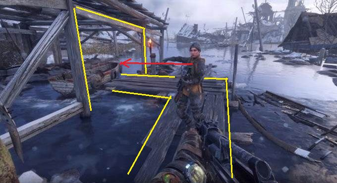
C другой стороны весь уровень Ямантау подан как один большой коридор-тир, где игроку дают шагнуть вправо-влево считанные минуты, но подано это с сюжетной стороны очень грамотно, да и ощущения открытого мира на предыдущем уровне еще не забылись, поэтому такое разнообразие идет игре на пользу. По рассказам коллег, Ямантау порезали на треть, чтобы коридорность не надоела.
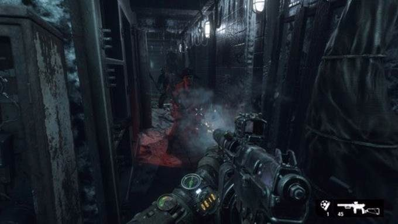
Framing & Composition (Композиция)
Еще одна техника пришла в игры из фотографии. Рамка вокруг объекта (ориентира, крупного врага, важного персонажа, входа в пещеру и т. д.) акцентирует внимание игрока на этом объекте. Этот прием особенно хорошо работает, когда игрока подводят к красивым видам, смене сюжета на уровне, или важным персонажам. После того как игра подвела игрока к определенному месту, рамка вокруг объекта в центре добавляет ему значимости. Лучше всего это продемонстрировано в сценах с Анной - в большинстве катсцен с её участием, акцент композиции сцены смещен именно на неё.
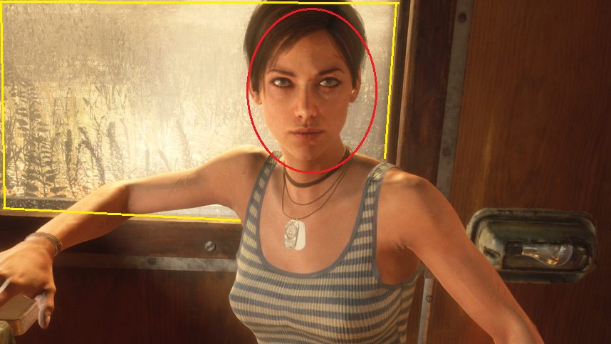
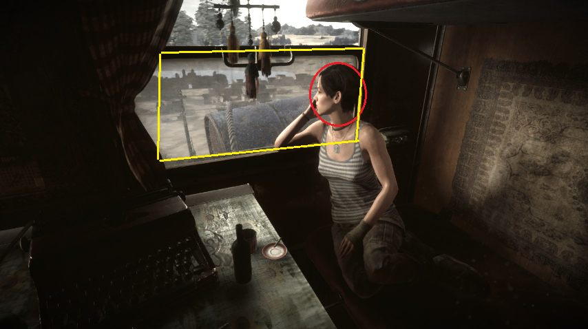
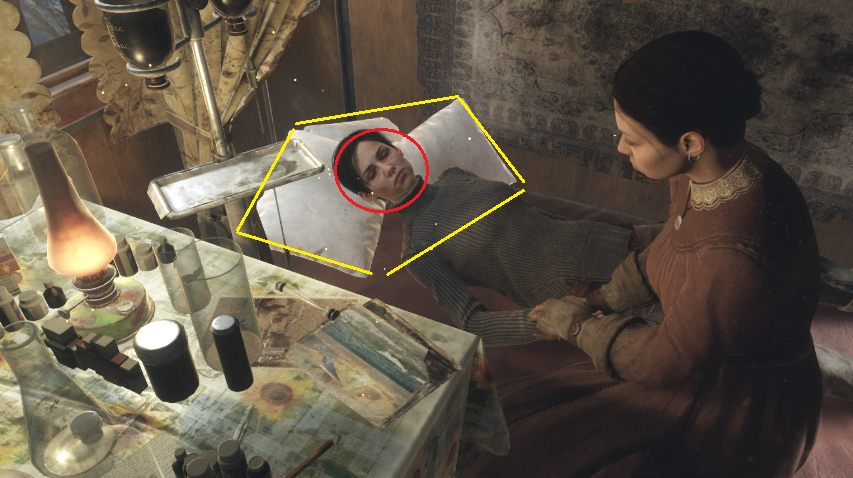
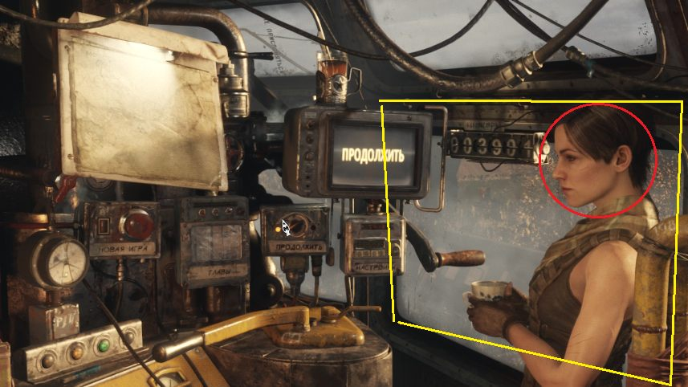
На этом пожалуй стоит закончить, надеюсь было интересно! Если не знали, то у игры есть SDK, в котором можно найти большую часть описанных здесь материалов и потрогать, что называется своими руками. (https://www.metrothegame.com/en-us/)
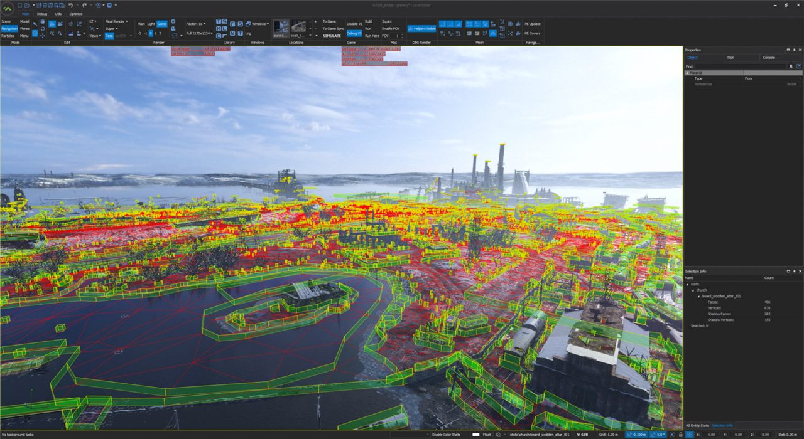
Что почитать на досуге
Оставлю здесь пару ссылок на книги, которые читаю сейчас, надеюсь они будут полезны. Лучше читать в оригинале, перевод мне не понравился
Level Up! The Guide to Great Video Game Design – Scott Rogers
101 Things I Learned in Architecture School – Matthew Frederick
З.Ы. А еще в свободное время я восстанавливаю старенький ситибилдер Pharaoh, заходите, будет интересно (https://github.com/dalerank/Akhenaten)
← Все статьи